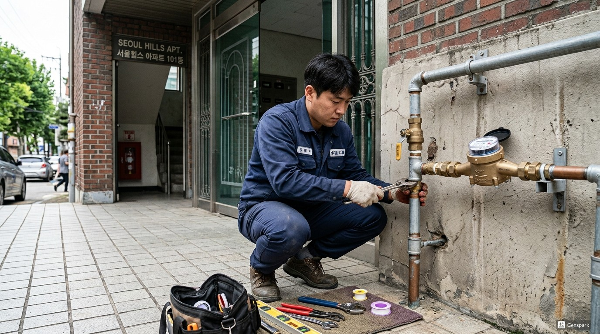
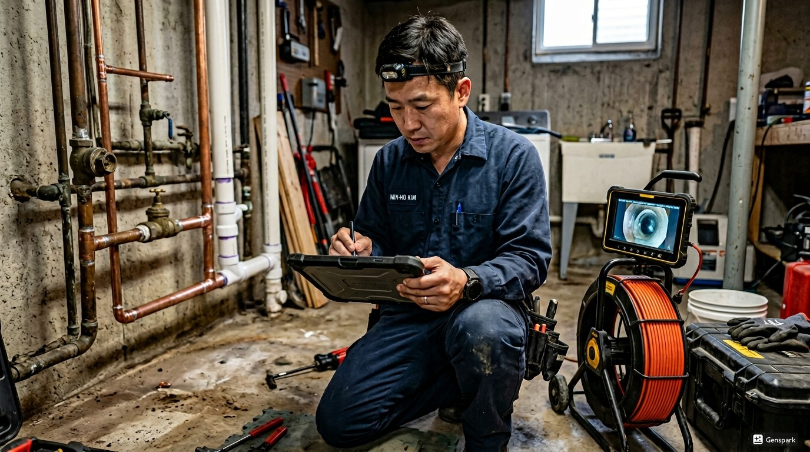
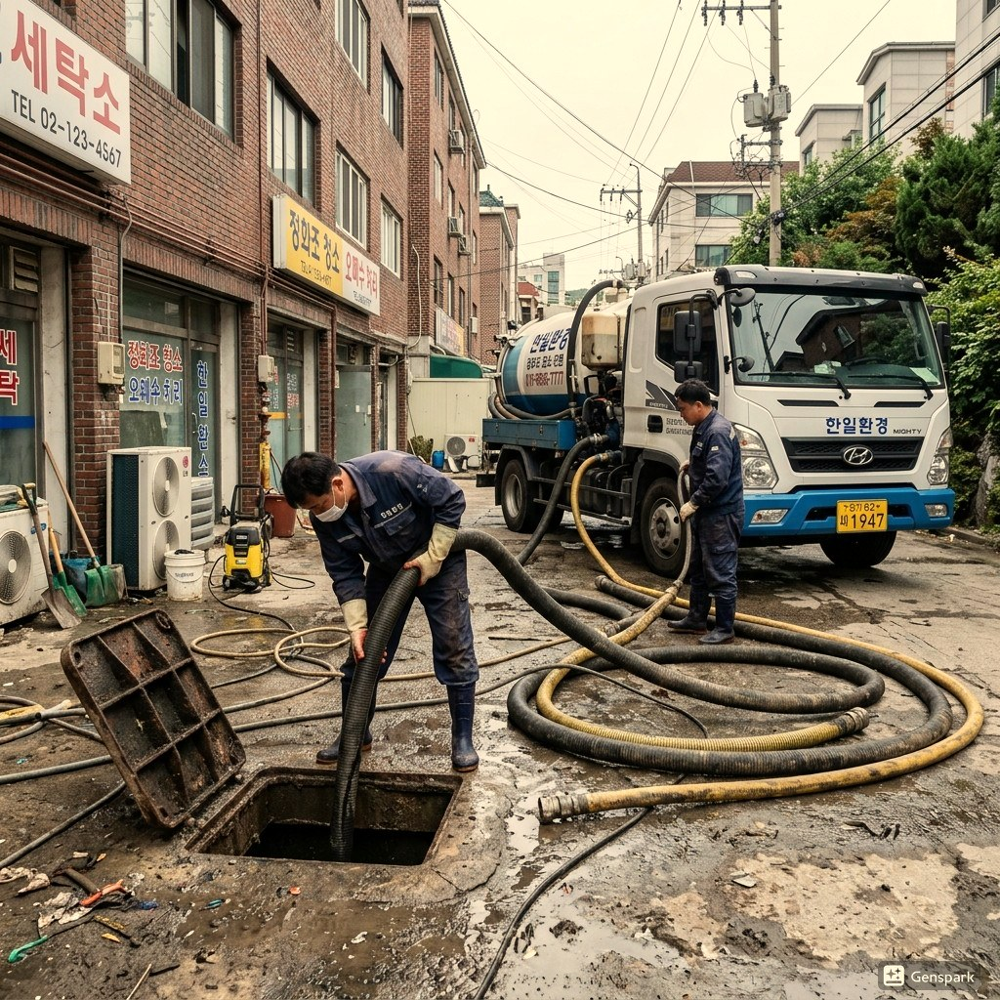

포천의 변기막힘는 건물의 나이와 구조에 따라 발생 패턴이 다릅니다. 산악 지역으로 경사지 배관 문제. 관광지 인근 급속 개발로 인한 시공 문제 포천의 특성상 이러한 문제가 자주 발생하며, 빠른 대응이 필요합니다.

▲ 포천 현장에서 전문 장비로 변기막힘 해결 작업 중
제우스시설관리는 변기막힘 문제를 해결하기 위해 최첨단 전문 장비를 갖추고 있습니다. 드레인 기계로 막힘을 물리적으로 제거하고, 관로 내시경 카메라로 정확한 원인을 파악하며, 고압세척기로 배관 내부를 완벽하게 청소합니다. 포천 전역에 서비스 인력을 배치하여 28분 내 출동 가능합니다.

▲ 전문 장비를 이용한 변기막힘 해결 작업
포천에서 변기막힘가 발생하는 주요 원인 중 하나는 '화장지를 과다하게 사용한 경우'입니다. 이는 포천의 지리적 특성과 도시 구조로 인한 자연스러운 결과입니다. 문제를 방치하면 더 큰 배관 손상으로 이어질 수 있으므로, 초기 증상이 보일 때 즉시 전문가 상담을 받는 것이 중요합니다.
✅ 드레인 기계 - 스프링 와이어로 배관 내 이물질을 물리적으로 파쇄·제거
✅ 관로 내시경 카메라 - 배관 내부를 실시간 영상으로 확인하여 정확한 진단
✅ 고압세척기 - 최대 200bar 고압수로 배관 내벽 오염물 완벽 세척
✅ 관로탐지기 - 매설 배관의 위치와 깊이를 정확히 탐지

▲ 제우스시설관리의 최첨단 장비로 신속하고 정확하게 처리
포천 전 지역에 28분 내 출동합니다. 야간·주말·공휴일 추가 요금 없이 동일한 서비스를 제공합니다.
변기막힘의 주요 원인은 과도한 화장지 사용, 물티슈나 생리대 같은 비분해성 이물질 투입, 그리고 배관 노후입니다. 특히 물티슈는 '수세식 가능'이라는 표시가 있더라도 실제로는 분해되지 않아 막힘의 주범입니다.
양변기의 트랩 구조는 S자 또는 P자 형태로, 이 곡선 부분에서 이물질이 걸려 막힙니다. 전문 장비 없이 무리하게 뚫으려 하면 도기(변기 본체)가 파손되거나 배관이 손상될 수 있으므로 전문가 도움을 받는 것이 안전합니다.
A. 손이 닿지 않는 곳으로 이물질이 넘어갔다면 무리하게 밀어넣지 마세요. 전문 장비(관로 내시경)로 위치를 확인한 후 안전하게 제거합니다. 무리한 시도는 배관 파손을 유발할 수 있습니다.
A. 변기 역류는 변기 자체의 막힘 또는 하수 본관의 문제일 수 있습니다. 특히 1층이나 지하에서 자주 발생하며, 정확한 원인 파악을 위해 내시경 카메라 진단이 필요합니다.
A. 작업 중에는 해당 변기 사용이 제한되지만, 대부분 1시간 이내 해결됩니다. 다른 화장실이 있다면 병행 사용 가능하며, 작업 완료 후 즉시 정상 사용할 수 있습니다.